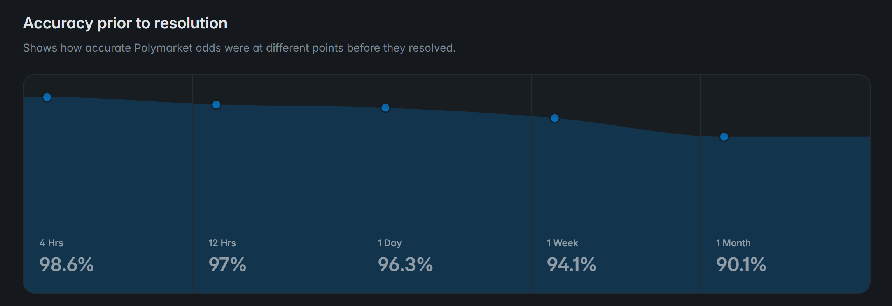
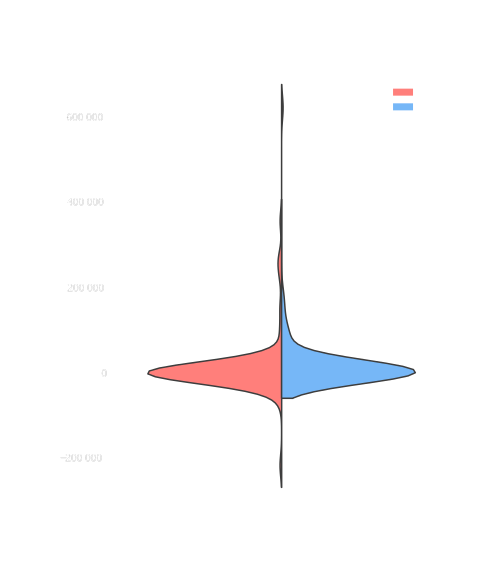

Polymarket's court of public opinion and the murder of Charlie Kirk
As accused killer Tyler Robinson is in court on homicide charges the market for betting on his guilt or innocence is surging.
Using AI we see the world through the eyes of those betting on Charlie Kirk's murder case, by mapping what else they bet on.
It's not only war and murder, but it is war and murder.
By Arvid Grange Published July 15, 2026
If you are betting on Tyler Robinson being guilty of killing Charlie Kirk, buying a share of “Tyler Robinson convicted of homicide?” sets you back 46 cents. If you get it right, the payout is a dollar per share.
These are the mechanics of Polymarket, the world’s leading prediction market. If a share is 46 cents that means consensus among traders is that there’s a 46 percent chance that the event will come true.
As the homicide case against Tyler Robinson entered a new phase of court hearings last week, almost a year after the September assassination of conservative political activist Charlie Kirk, the accused killer stood for the first time face to face with Kirk's widow and parents.
What's that if not a chance to make a buck?
That’s the reasoning on Polymarket, where betting on these kinds of real-life events has broken through to the mainstream, generating the platform a monthly trading volume of around $10 billion.
Charlie Kirk speaking at the University of Florida in February 2025. Photo: Gage Skidmore
Despite last week’s highly publicized court hearings, generating headlines such as BBC’s “'Devastating' evidence against Charlie Kirk murder suspect laid out in court”, people are not betting on Tyler Robinson’s guilt.
According to the market, they are anticipating his innocence, with slightly more than half of all bets consistently wagering on Robinson not being convicted.
With the ongoing court case as a backdrop the bets placed have soared from a trading volume of $150 000 on the day the hearings started, to $211 000 a week later. However, analysing the data exposes an unevenly distributed market.
The top 10 holders of the Tyler Robinson homicide market own 31.5 percent of all shares, an increase from 28 percent at the start of the court hearings. The top 100 holders control more than half of this market.
According to data from Polymarket, their market predictions in general are not just whims of the public. Most of the time the leading prediction turn out true.

Markets tend to resolve according to prediction, Polymarket data shows. Chart by Polymarket.
Although the leading bet predicts that Tyler Robinson will not be convicted of homicide, further analysis of the top traders' transaction history finds that the people betting on Robinson’s guilt are more likely to make successful bets.
This image from the FBI shows the alleged killer on the day of the murder.
The yes-bettors, with average all-time profits around $17 000, have made 53 percent more money in their Polymarket careers than their counterparts.

Among the top 200 traders on this niche market, the ones betting "Yes" have made more profit on Polymarket.
Through AI-analysis of more than 27 000 thousand of the most recent bets placed by the top 100 traders betting on Charlie Kirks' murder case, you can see the world through their eyes, or at least their wallets, by following what else they bet on.
Elections, sports, and the USA – Iran conflict are the most common topics to bet on. But which are the most popular bets of all?
>
While showing the ten biggest markets in terms of pure bet volume this does not really show how popular these markets are among the people betting on the Tyler Robinson case. To get another idea, these are the markets which most individual traders placed bets on.
After last week’s 5-day hearing was concluded, the judge is soon expected to deliver a ruling on whether there is sufficient probable cause for the case to move on to trial.